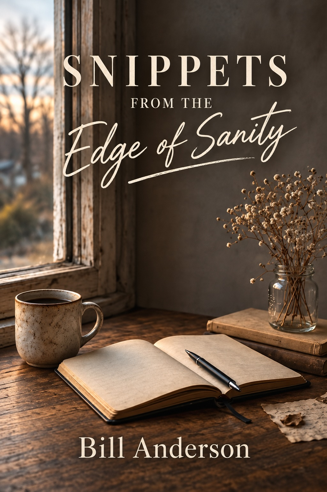

Available Now
Snippets from the Edge of Sanity
A collection of poetry from Bill “Scotti” Anderson — observations, memories, feelings and moments gathered from a life spent watching, listening, writing and creating.
Personal without pretending to have all the answers, Snippets from the Edge of Sanity moves through the joy, pain, humour and uncertainty that make up an ordinary — and extraordinary — life.